AR wayfinding · Bạch Mai Hospital
An elevator warning made people stop short of arriving
One pain point, one fix, and one new dashboard.
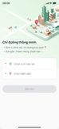
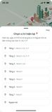
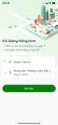
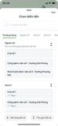
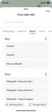
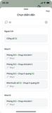
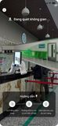
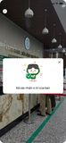
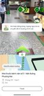
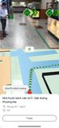
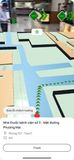
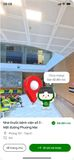
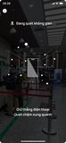
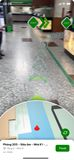
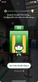
- My part
- Pain point, dashboard
- With
- A lead business analyst, the dev team
- Period
- 2025 – 2026
- Tools
- Figma, Kibana, Blender
The problem
Visitors use the app to find their way through the hospital. Logs and on-site observation agreed: some people ended navigation before they arrived, mostly around the elevators.
What I found
Riding the elevator triggered a warning, and afterwards the app had to rescan. The logs count how often people left right there, on the wrong floor.
The decision
Option A
Why not
Option B
Why not
Option C · chosen
Why this one
The solution
1 Scan guidance
A short animation shows how to hold the phone and scan the space.
2 On the wall
A3 and A4 posters and a standee introduce the app where people wait.
3 Dashboard
Kibana panels follow a visit from the QR leaflet to arrival.
Result
wrong-floor stops: number to come
screens for the second hospital
less development time there